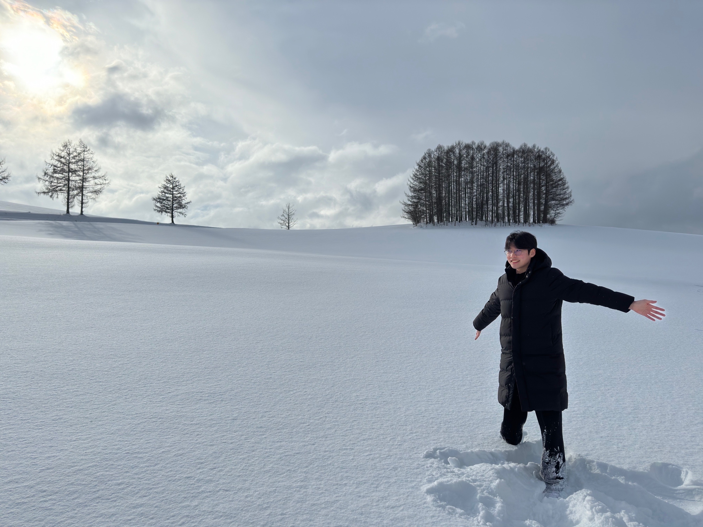
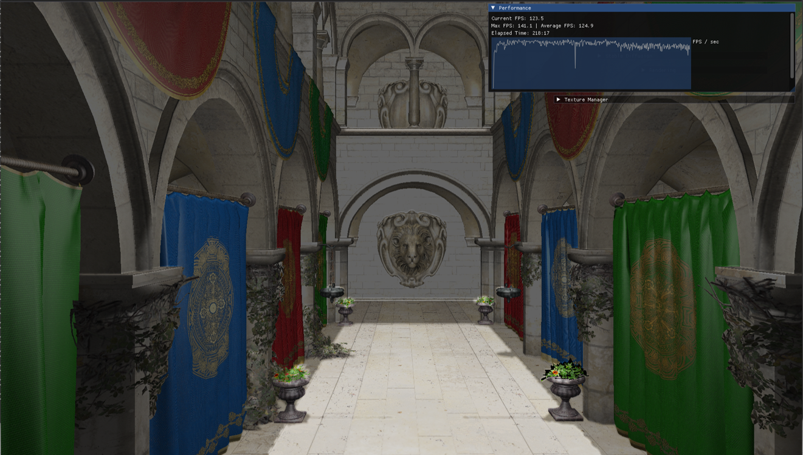

I am an undergraduate student with a strong focus on computer graphics and image/video processing, proficient in low-level graphics APIs such as Vulkan and DirectX, and currently employing PyTorch to study deep-learning.
nemostar51 AT gmail.com
